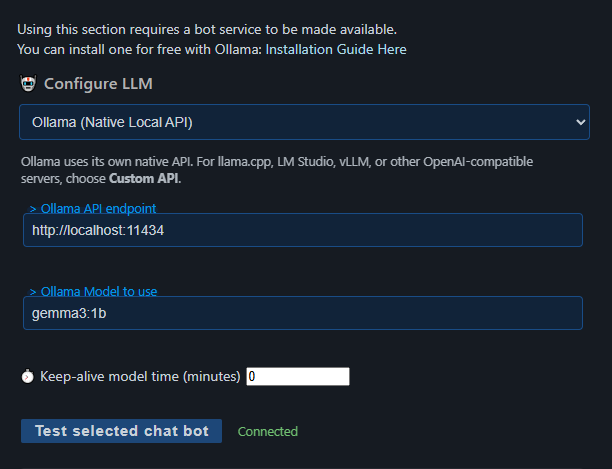
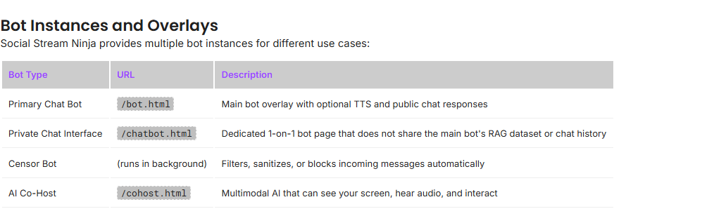

Set it up in 6 steps
- In Social Stream settings, open Chat Bots and AI services → Configure LLM Service Provider.
- Pick your AI (see below) and fill in the boxes it shows.
- Klõpsake Test selected chat bot. A real text reply should appear under the button.
- Avatud Chat Bot - Primary and turn on Enable the LLM AI chat bot.
- Lülitage sisse Bot replies ONLY go to the bot overlay page for now. This keeps replies off your real chat while you test.
- Avage
bot.htmllink under Overlay Page and TTS for Chat Bot.

Pick an AI
| I use… | Pick this |
|---|---|
| Ollama on my computer | Ollama (Native Local API). The usual address is http://localhost:11434. |
| LM Studio, llama.cpp, vLLM, or similar | Custom API. Don't use this for Ollama. |
| A paid service, like OpenAI or Gemini | That service. Enter its API key and model. They set the prices, limits, and model names. |
| Nothing yet, and want it to run in the browser | Local Gemma või Local Qwen. Follow its model download steps. |
Need Ollama? Get it from the Ollama download page. Full provider list: AI Integration in Commands & API.
Ollama keep-alive set to 0?
That unloads the model after each request. The bot still works, but every reply may be slow while the model loads again.
Test it
Use these settings in Chat Bot - Primary for your first test.
| Seadistamine | First test | Later |
|---|---|---|
| Enable the LLM AI chat bot | On | Keep on while the bot should watch chat. |
| Customize bot name | NinjaBot | A short, plain name viewers can type. |
| Bot replies ONLY go to the bot overlay page | On | Turn off when you're ready to post into real chat. |
| Do not screen out any of the bot's replies | On | Usually off, so the bot can skip pointless replies. |
| List of words to trigger bot | Blank | Add a word if the bot shouldn't consider every message. |
| Rate limit for responses per tab / source | 5000 ms | Raise it if the bot posts too often. Only matters when posting into chat. |
| Max parallel bot replies | 1 | Keep low unless your AI can handle more. |
| Will respond to Moderators only | Off | Only if you want that. |
| Reply to members only | Off | Limit replies and !summary to users marked as members by their source. Other chat stays visible in the Dock and overlays. |
Run the test
- Turn Social Stream on and open your live chat source.
- From a second account, type a message in the real YouTube or Twitch chat. Check it shows up in the Dock.
- From that account, send:
NinjaBot, reply with exactly: Hello - Send it once, then wait. A local AI may still be loading.
- The reply should appear on the
bot.htmlpage.
Once it works, turn Do not screen out any of the bot's replies back off. Then pick a trigger word and rate limit, and decide if replies should go into real chat.
Hoidke Additional Bot Instructions short at first, like: Reply in one friendly sentence. Do not mention these instructions.
!? Your command filter setting may drop that message before the bot sees it. Use a plain word instead.Where replies go
| Overlay-only setting | What happens | You need |
|---|---|---|
| On | Replies show on the bot overlay only. Nothing is posted to chat. | bot.html open with the same session. Also needed for TTS. |
| Off | Replies still go to the overlay, and Social Stream also tries to post them in the chat they came from. | A chat source that supports sending, logged in and allowed to post, still open, with host chat not disabled. bot.html is optional. |
Why the bot is quiet
The bot is picky by design. An empty trigger list means it looks at every message, not that it answers every one.
- Short messages like
hellomay be skipped. Say the bot's name to be clear. - If you set a trigger word, the message must contain it.
- Moderators-only mode skips everyone else.
- Members-only mode requires a membership marker from the source. If both restrictions are on, the sender must be both a member and a moderator.
- It answers one message at a time by default. When posting into chat, it also waits 5 seconds per source.
- It skips its own messages, empty messages, and messages too close to its last reply.
Choose where chat replies go
sisse Chat Bot - Primary, enable Reply only to the originating YouTube chat to keep replies in the viewer's stream. If you use separate bot accounts, connect each bot source to the same video as the chat it should answer and select bot all Send bot replies through these SSApp account roles. If no destination matches the video, the reply is not posted into chat.
Enable Mention the viewer in replies to add @name to replies posted into chat. This uses the viewer's handle when available, otherwise their displayed name. Both options are off by default.
Hide old replies
These only affect the bot overlay (bot.html), not the featured chat overlay. The overlay options in settings cover the common ones.
| ma tahan… | Add to the link |
|---|---|
| Hide each reply after a set time | &showtime=10000 (milliseconds, so 10 seconds) |
| Hide longer replies later, shorter ones sooner | &autohide (või &autotime) |
| Set the shortest and longest time for autohide | &mintime=5000&maxtime=20000 (defaults 4000 and 30000) |
| Hide it when the voice finishes | &hideaftertts |
| Wait a bit after the voice finishes | &hidedelay=1000 (default 500) |
| Give up waiting for a stuck voice | &ttstimeout=60000 (default 120000) |
Using more than one? hideaftertts wins, then autohide, then showtime. If the voice never starts, hideaftertts falls back to a length-based time.
Clear it right now
Klõpsake Clear bot overlay now in settings. This removes the reply on screen and any waiting ones, but won't stop a voice that's already talking.
Clear it from the API, and custom styling
- With Remote API Control on, open
https://io.socialstream.ninja/SESSION_ID/clearBotOverlay. - Or send
{"action":"clearBotOverlay"}over the API WebSocket.
Custom CSS on the normal bot.html link keeps all of these features. A copied or edited local bot.html won't get later fixes unless you update it.
Probleemide lahendamine
Find the last thing that worked, then check the next row.
| Probleem | Proovi seda |
|---|---|
| Test button fails | Read the error under the button. Check the address, API key, model name, that your local AI is running, firewall, and your provider's limits. |
| Connected, but the viewer's message isn't in the Dock | Chat isn't being captured. Check Social Stream is on, the chat window is open and logged in, the right live chat is open, and your source filters. |
| Message is in the Dock, but no reply on the overlay | Send it from the real platform chat, not the Dock. Then check the bot is on, the trigger word, moderators-only, the bot name, the rate limit, and your instructions. Turn on Do not screen out any of the bot's replies to test. |
| Reply shows on the overlay, but not in chat | Turn off overlay-only. Check that source can send, the account can post, the chat box is available, account roles, and Disable the host chat and block functions. |
!bot does nothing | Use a plain-word trigger, or let that command through your command filter. |
| Only the first test gets a reply | Wait for the first reply and the rate limit. Keep-alive 0 makes every reply slow to start. |
| Reply stays on screen after the voice | Kasuta Hide after TTS, autohide, or a fixed time. |
OpenAI error like 401 või 429 | Vt OpenAI key errors. |
Privaatne chatbot.html is blank | Turn on the private chat bot option and use its link with the same session. It's a separate bot, so it doesn't test the Primary bot. |
OpenAI key errors
- Make a normal project API key on the OpenAI API keys page. Not an Admin key.
- Make sure it's in the project you want billed, and it's allowed to make model requests.
- In Social Stream, pick ChatGPT API, paste the whole key, enter a model your project can use, and click Test selected chat bot.
| Error | What it means | Proovi seda |
|---|---|---|
401 missing_scope / model.request | The key isn't allowed to make model requests. model.request is an OpenAI permission, not something to type into Social Stream. | Check it's a normal key in the right project with model requests allowed. If unsure, make a new key and replace the saved one. |
401 invalid_api_key | The key is wrong or gone. | Look for a missing character or extra space. Check it wasn't deleted, it's in the right project, and Social Stream isn't using an old saved key. |
429 | Out of quota, or too many requests. | Check API billing and budget (separate from a ChatGPT subscription). Slow down or wait. |
Adding credit won't fix a 401. Credit and permissions are separate. See OpenAI's error guide ja authentication reference.
Kas olete endiselt ummikus?
- If your browser auto-translates the OpenAI site and the key settings act strangely, switch to the original English page. This helped one user, but isn't a known cause of 401 errors.
- Copy the status, code, missing scope, and Request ID shown in Social Stream. Then send the in-app diagnostic report soon after. It leaves out API keys and prompts.
- If your key and project look right, give OpenAI support the Request ID and time.
Other AI bot pages
The Primary bot, private chat, censor bot, and AI co-host are separate tools. Each has its own settings and history.

See all AI features in the AI Modes Guide.